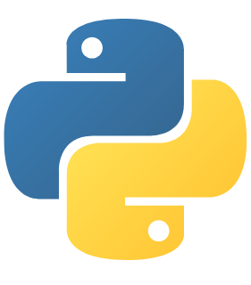

my skills
html
css
javascript
Figma

years of experience
project completed
I am in charge of managing and publishing content on social media, specifically the website and Instagram sections. I also control the website of Sola Gracia Communities Link Website Sola Gracia Communities(SGC): http://www.sgcfamily.org/
I serve as a coordinator in the Sola Gracia Communities media team to manage social media accounts in terms of overall content with other team members. The detailed tasks carried out include planning the content to be broadcast, determining the schedule of the content broadcast, analyzing the published content, to answering all questions/comments/complaints that come from followers/ followers.
I was awarded "The Best Ambassador" award at the time for successfully inviting people into our community more than the target requested
I made several websites and also UI designs for the purposes of coursework or independent projects
My team and I participated in a competition organized by a university with a UI/UX competition with a health center. The name of the App we created is Sahabat Jiwa
I am in charge of helping the implementation of Web Dev and APSI lessons in the Practical section